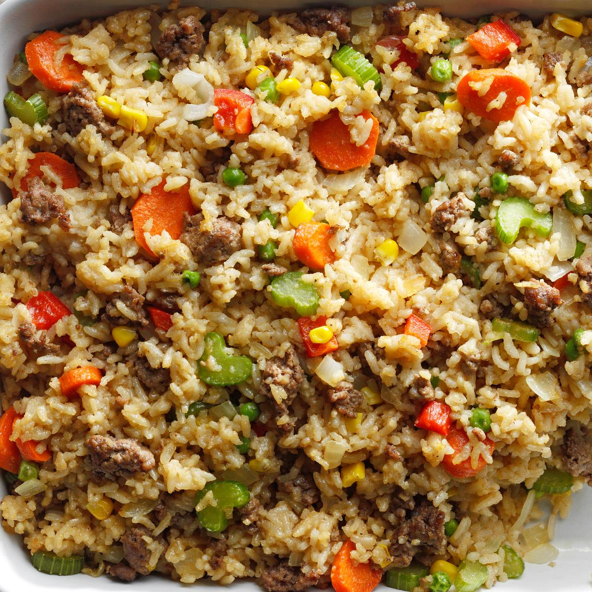

Cajun Rice

Cajun Rice
This is an example image for the dish cajun rice.
- rice
- 3 half peppers
- onions
- 5% fat mince
- 4 strips of Unsmoked Bacon
Steps for Cajun Rice
- Take 500g of 5% fat mince and place into pan.
- Take onion and finely dice it into pieces, put these pieces in with the mince
- Take 4 bacon strips and firmly dice, place in pan with mince and onion
- Turn cooker to gas mark 4 place pan onto active hob.
- Once mince has browned thoroughly, add two teaspoons of Cajun Seasoning to mix, along with a dash of Worchestershire Sauce
- Dice 3 half peppers 1 red, 1 green, 1 yellow, and add to the mixture
- Take 1 tin of Kidney beans, 1 tin of Mixed Beans and 1 tin of Black beans, place these into a collander over a sink
- Wash the beans with water before allowing the water to drain, add the beans to the pan.
- Boil kettle with Water
- Take oxo cube, break the cube up and place it into a measuring jar.
- pour 150-200ml of boiling water into the measuring jar, stir until no bits of the oxo cube remain.
- Along side step 4, take Chicken stock cube, and break into pieces, place in pot
- add boiling water and cupfull of rice to the pot, place on active hob
- once rice has cooked, place into collander and allow to drain
- From step 11, take the measuring jug and pour contents into pan
- add rice to pan and stir mixture
- keep stirring for 5-10mins
- Seperate into 4 portions
Return to Home